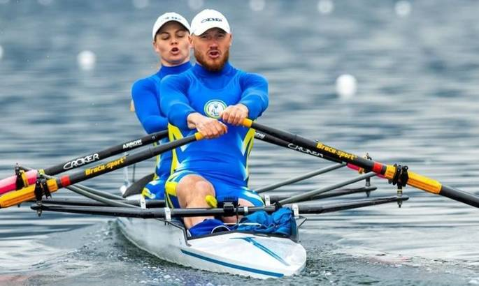

In the USSR, the first championship in academic rowing took place in 1923, and in Ukraine in 1925 in the city of Mykolaiv. G. Kyrychenko became the first Ukrainian champion of the USSR in 1938.
1952 at the European Championship G. Zhilin, I. Yemchuk and K. Zemlyanska won the first gold medals in academic rowing.
From 1950 competitions for the Cup of Ukraine are held, during which, since 1998, cups named after famous Ukrainian athletes and crews have been played.
Currently, academic rowing in Ukraine is developing in Dnipropetrovsk, Cherkasy, Zaporizhzhia, Kherson, Mykolaiv, Vinnytsia, Kharkiv, Odesa, Kyiv regions and the city of Kyiv. The Ukrainian national team participates in international competitions, in particular in the Olympic Games: men since 1952, and women since 1976.
The main achievements of Ukrainian athletes at the Olympic Games
- M2x (men's doubles pair) I. Yemchuk, H. Zhilin silver medalists in 1952 and bronze medalists in 1956.
- M8+ (men's eight) V. Sterlyk, V. Kravchuk - bronze medalists of 1968.
- W8+ (women's eight) Guzenko, N. Tarakanova, N. Rozgon, O. Kolkova, O. Zubko, O. Pugovska - silver medalists of 1976, coach H. Ushakov
- W8+ (women's eight) Pivovarova, N. Umanets, N. Pryshchepa, T. Stetsenko, O. Tereshyna, M. Pazyun, N. Preobrazhenska Antonyuk - silver medalists of 1980, coach V. Potapenk
- M8+ (men's eight) O. Tkachenko, V. Kokoshin, A. Tyshchenko, G. Dmytrenko - bronze medalists of 1980;
- M1x (single person) M. Dovgan silver medalist in 1980
- W4x+ (women's doubles four) A. Pustovit is a silver medalist in 1988
- M4x (four doubles) Yu. Cap is a silver medalist of 1988
- M8+ (eight people) P. Gurkovskyi, S. Kirsanov, M. Komarov, V. Omelyanovych, G. Dmytrenko - silver prize-winners of 1988
- W4x (women's doubles four) S. Mazii, I. Frolova, I. Kalymbet - silver medalists of 1988
- M2x (men's doubles pair) O. Marchenko is a bronze medalist in 1988
- W4x (women's doubles four) T. Ustyuzhanina is a bronze medalist in 1992
- W4x (women's doubles four) S. Mazii, D. Miftakhutdinova, O. Ronzhina, I. Frolova - silver medalists of 1996, coach - Ye. Pavlov;
- M4x (four doubles) L. Shaposhnikov, O. Lykov, S. Bilouschenko, S. Gryn - bronze in 2004, coach A. Shishkanov
- 4x (women's doubles four) Ya. Dementyeva, A. Kozhenkova, K. Tarasenko, N. Dovgodko - gold in 2012, coach - V. Morozov.
In 2008, adaptive rowing was added to the Paralympic Games (now it is called para-rowing), in which our athlete R. Polyanskyi twice won the gold of the 2016 and 2021 Olympics and was recognized as the best rower in this class of all time.